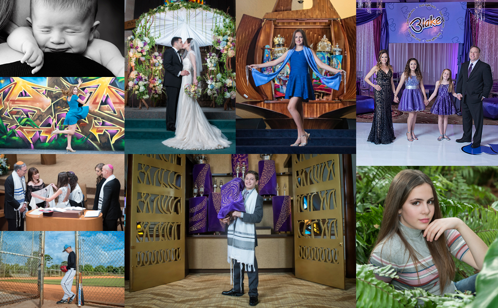

Boca Raton Photographer John Canning is a Fine Art lifestyle, Bar/Bat Mitzvah, Wedding and Portrait Photographer available for events throughout South Florida.
John Canning a Boca Raton based photographer will capture every moment of your special event with a storytellers eye. So if you are celebrating either a Bar or Bat Mitzvah, Engagement, Wedding or marking a milestone in life with a family portrait session do not hesitate to contact John Canning. With years of experience in fashion, editorial and fine art photography and hundreds of portraits, mitzvahs and weddings photographed throughout South Florida John brings a passion for storytelling and a unique perspective to every event he captures.